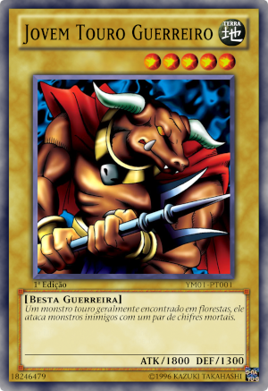
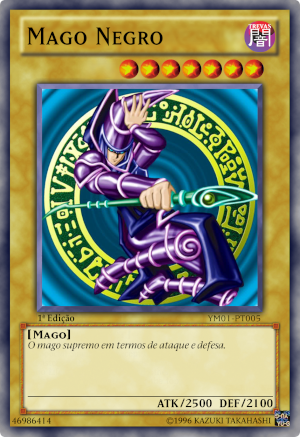

Download da carta.zip
Um monstro touro geralmente encontrado em florestas, ele ataca monstros inimigos com um par de chifres mortais.

Um dragrão maligno que cospe fogo. As suas chamas maléficas corrompem as almas de suas vítimas.

O mago supremo em termos de ataque e defesa.